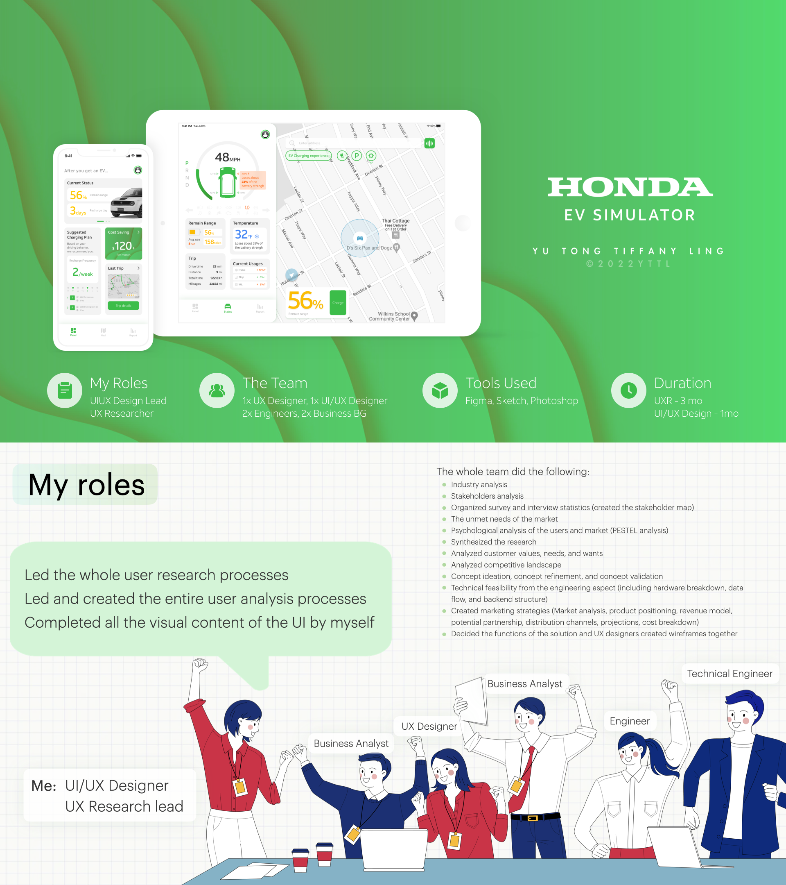
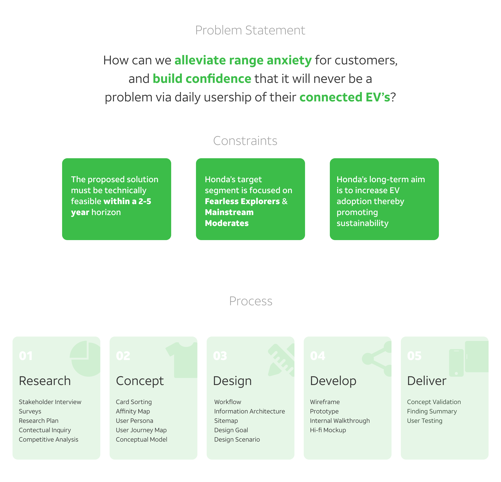
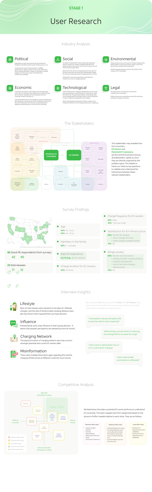
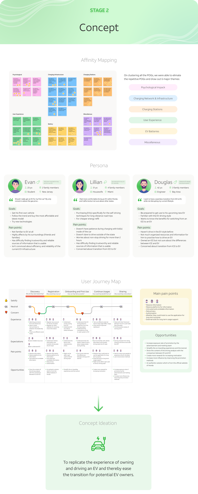
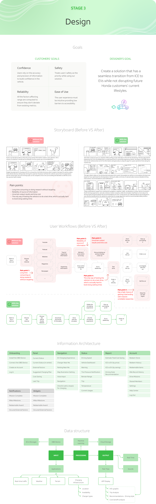

Honda EV Simulator — Range Without Anxiety
A CMU MIIPS Capstone sponsored by Honda. We designed an app experience that lets first-time EV drivers practice the mental model of range, charging, and trip planning before they ever buy.
Overview
Honda EV Simulator is a Spring 2022 Capstone project sponsored by Honda for Carnegie Mellon University's MIIPS program. The brief was to design a solution that alleviates range anxiety — the single biggest hesitation keeping internal-combustion (ICE) drivers from switching to electric vehicles — and gives Honda customers daily confidence that range will never be a problem on their EVs.
We believe this product can help Honda grow its EV customer base as it expands its future EV portfolio. I led the entire user research process, the user analysis process, and designed every single UI screen in this product myself, in collaboration with engineers and business analysts.

Problem Statement
How can we alleviate range anxiety for customers, and build confidence that it will never be a problem via daily usership of their connected EVs?

Stage 1: User Research
Industry analysis (PESTEL), stakeholder mapping, survey of 80+ respondents and 23 interviews, plus a competitive landscape on existing EV platforms.

Stage 2: Concept Ideation
Synthesized research into affinity maps, personas, and a user journey to surface pain points and opportunities — distilled into a clear concept ideation.

Stage 3: Design Process
Defined customer / designer goals, mapped before-vs-after storyboards and user workflows, then built the information architecture and data structure.

Stage 4: Final Design Solution
Translated the framework into wireframes, mid-fi, then hi-fi screens. Established the brand system — typography, palette, components — and packaged the final deliverable.